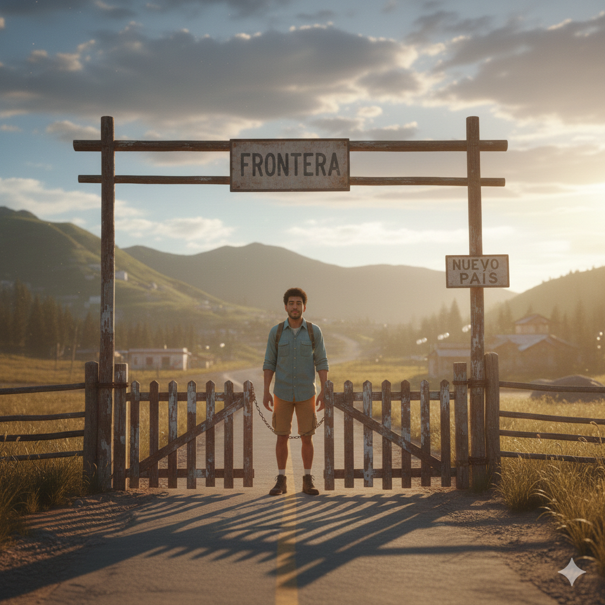

Pipo llega a la frontera, pero el camino fue bastante largo, aunque no tuviera tantos desvíos.
Aunque logró llegar a la frontera, eligió un camino donde no podía elegir directamente a dónde iba.
Pipo cruza la frontera con alivio y con la esperanza de empezar de nuevo.
FIN NEUTRO